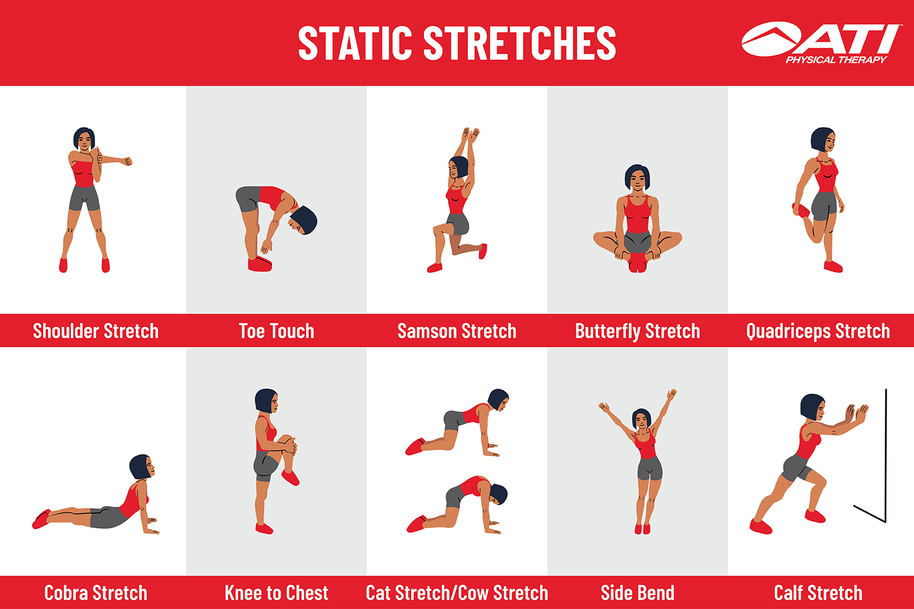
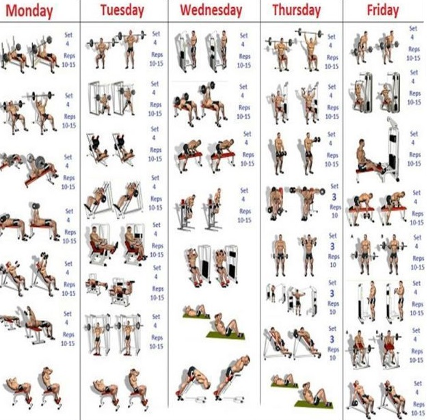

O aquecimento é importante para fazer o sangue circular pelo corpo, de modo a fazê-lo entender que algo extenuante está por vir.
Ele pode previnir o acontecimento de cãimbras e, portanto, de lesões!
Ele pode ser abordado de diferentes maneiras, quais sejam: alongamento, depois uma breve caminhada seguida de uma breve corrida, e, por fim, fazer séries leves (longe da sua carga máxima) para você preparar o seu músculo e evitar as lesões acima mencionadas!
Faça cada um dos alongamentos ilustrados em 3 séries de 30 segundos.
Feito o alongamento e, se for do seu interesse, a caminhada seguida de uma breve corrida, agora é o momento de fazer os aquecimentos musculares leves.
Então, você terá um foco em mais volume e menos intensidade, ou seja, mais repetições e menos carga, fazendo por volta de 3 séries no máximo, antes de começar o treino pesado!
Como o aquecimento será direcionado aos músculos treinados no dia em específico, estes terão uma maior circulação de sangue antes do treino PESADO, o que por sua vez irá garantir que aquela área esteja mais rica em nutrientes e oxigênio, tornando o seu treino mais eficiente e com maior qualidade.
Exemplo: se no dia X você vai treinar Bíceps, faça 3 séries de rosca direta, podendo ser com halteres ou na máquina, visando realizar entre 10-15 repetições com relativamente pouca carga para não cansar o músculo já no aquecimento e sim preparâ-lo para o que está por vir. Feito isso, o seu bíceps estará devidamente aquecido e você pode partir para sua série REAL de rosca direta. A mesma ideia vale pra cada músculo treinado naquele dia.
Abaixo seguem algumas ideias de exercícios:
Para que seus esforços sejam devidamente recompensados, certifique-se de ser consistente, isto é, seguir o seu regimento de exercícios sem faltas, a não ser que esteja diante de alguma enfermidade incapacitadora.
E também tenha uma boa dieta, pois sem isso, o tão sonhado "tanquinho" jamais irá aparecer! Então, é como dizem, o abdomem é feito na cozinha! E logicamente os outros músculos também precisam de uma boa nutrição.
E por último, certifique-se de ter uma boa higiene do sono, pois sem ela você terá dificuldade de desenvolver seus músculos e, consequentemente, seus treinos, pois é durante o sono que nos recuperamos e, portanto, evoluímos.